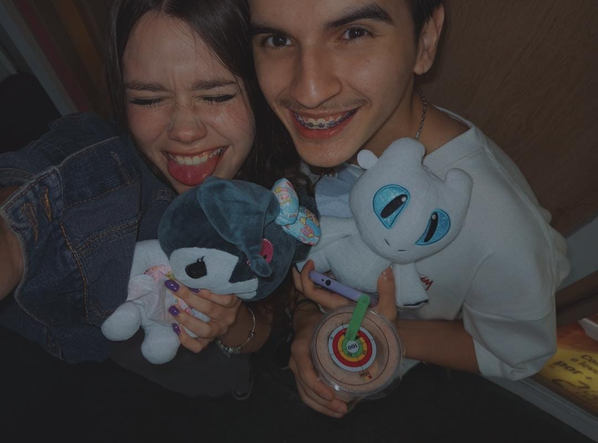
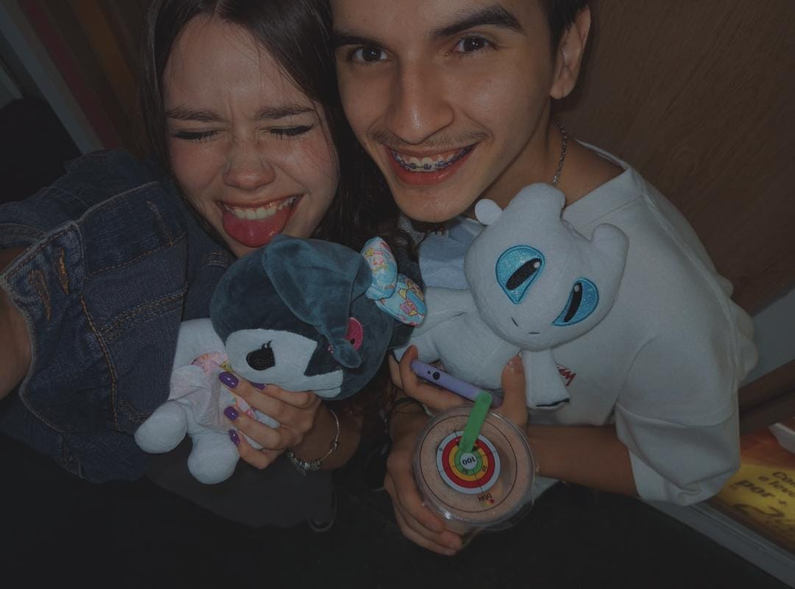

Nossas Histórias
Onde Tudo Começou...
Lembro-me perfeitamente do dia em que nossos olhares se cruzaram. Foi um momento simples, mas que reescreveu todo o meu futuro. Naquele instante, algo em mim soube que você seria a pessoa que traria cor e alegria inesgotável para a minha vida. Você é o meu melhor "sim".
Aventuras Inesquecíveis
Desde aquela viagem de última hora até as noites tranquilas assistindo a filmes, cada momento ao seu lado é uma aventura que eu guardo com carinho. Você me ensinou o valor da simplicidade e a beleza de viver o presente. Obrigada por ser a minha companheira de todas as horas!
Um Mosaico de Nós
Doze momentos que representam a jornada do nosso amor.
O Início de Tudo
Aventuras e Viagens
Momentos Aconchegantes
 

Nosso Próximo Capítulo
O Por que eu te amo.
Para te falar a real may, nem eu sei, eu apenas sinto uma boa coisa vindo de você, eu me sinto completo com você, me sinto iluminado, eu amo você com todo meu coração.
Uma Mensagem Secreta
Clique no botão para revelar o que eu mais amo em você neste dia especial!